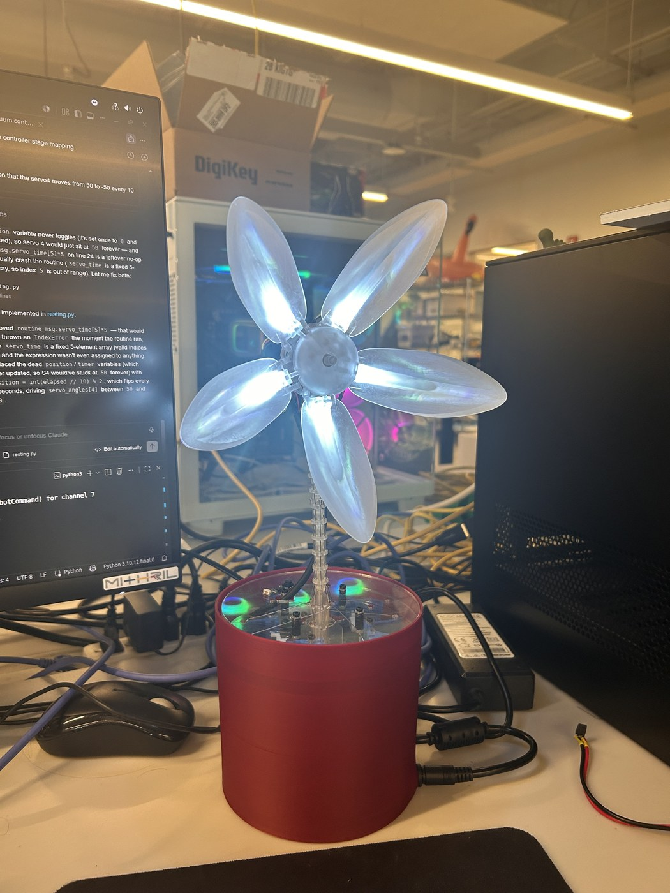
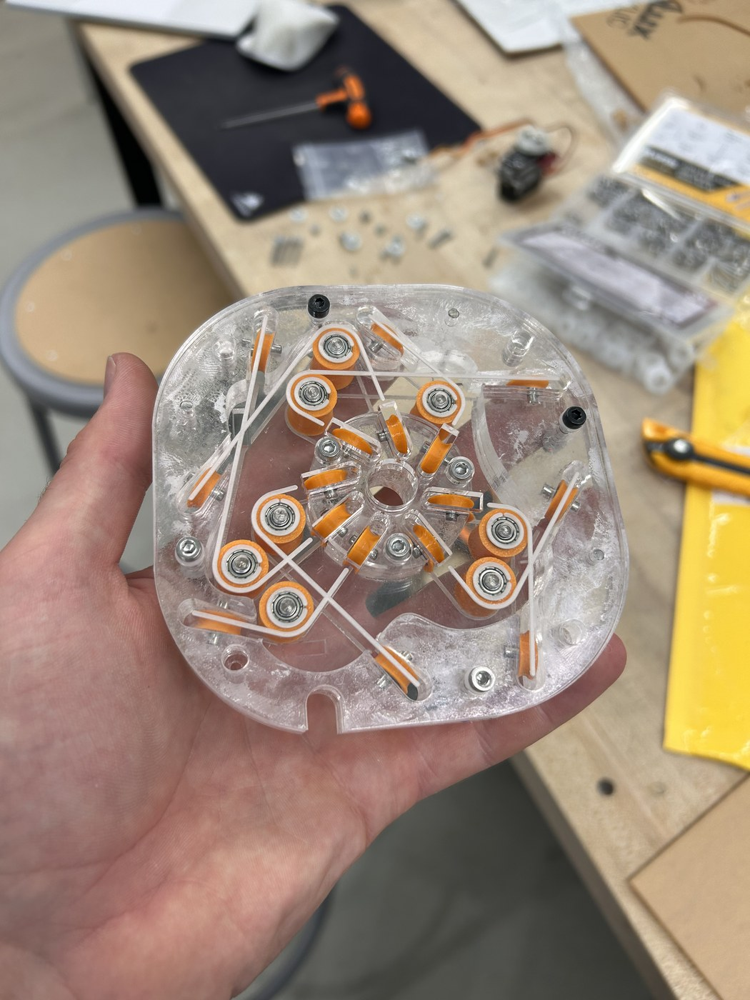

LLM-Driven Mental Health Companion Robot

Designed, fabricated, and programmed a tendon-driven, continuum-stem animatronic flower robot from the ground up -- the physical embodiment for an LLM-driven mental health companion research platform in the lab's Human-Robot Interaction research program. The robot communicates non-verbally through petal color, petal-angle motion, and a dual-stage continuum-style stem, with no anthropomorphic face or voice.
Demo
Mechanical Design
CAD in Fusion 360, laser-cut acrylic subframes, and 3D-printed structural parts. The stem is a dual-stage tendon-driven continuum mechanism -- a stack of ball-and-socket joints strung with four tendons -- that bends smoothly rather than pivoting at discrete joints. The five-petal head carries its own independently addressable LED array and is driven off the stem by a geared N20 motor with an encoder-based position loop.
ROS 2 Node Graph
The host stack is a mode-aware pipeline: the GUI and the kinematic solver both feed
flower_mux, which is the only node allowed to publish the final command the
hardware actually receives -- and it's careful to keep the GUI's LED/motor state intact even
while kinematic mode is driving the servos. Vision runs as two fully independent nodes that
aren't wired into control yet.
| Topic | Type | Published by | Purpose |
|---|---|---|---|
| /manual_commands | RobotCommand | flower_gui_node | Full manual servo / LED / N20 state, published continuously |
| /kinematic_commands | Float64MultiArray | flower_gui_node | [theta1, phi1, theta2, phi2] bend targets, degrees |
| /control_mode | String | flower_gui_node | "manual" or "kinematic" -- selects what flower_mux forwards |
| /kinematic_calculated_commands | RobotCommand | continuum_controller_node | Per-servo angles solved from the bend targets |
| /flower_commands | RobotCommand | flower_mux_node | Final merged command -- the only topic the ESP32 receives |
| /flower_debug | String | ESP32 flower_node | Runtime telemetry / troubleshooting |
| /vision/red_ball, /vision/blue_ball | PointStamped | localization_tracker | 3D marker position; not yet consumed downstream |
| /face_tracking_angles | Point | face_tracker | Face pan/tilt offset; not yet consumed downstream |
Embedded Firmware
ESP32 firmware (PlatformIO/C++) driving four servos through a PCA9685 I2C driver (S-curve-eased toward each commanded angle), the petal LED array via FastLED, and the N20 base motor through an encoder-feedback position loop. Connectivity is a self-healing Wi-Fi/micro-ROS routine that resolves the host over mDNS and automatically re-establishes the ROS session if the link drops, with a visible LED status animation during each connection phase.
Perception
Two independent OpenCV nodes, each on its own USB camera. localization_tracker
detects red/blue marker balls with HSV segmentation, shape-filters by circularity/solidity to
reject glare, corrects lens distortion from calibrated intrinsics, and smooths position with a
per-color exponential moving average. face_tracker uses RetinaFace for the
nearest-face pan/tilt offset. Neither is closed into control yet.
Guided Breathing Routines
Beyond manual and LLM-driven control, the GUI ships pre-programmed guided routines (e.g. box breathing) that animate petals and color through a fixed rhythm on their own -- a direct link between the robot's movement vocabulary and the mental health use case it's built around.
Documentation
Authored a 27-page technical handbook -- assembly instructions, tendon tensioning/repair procedures, full software architecture, host setup, and day-to-day startup/shutdown -- plus the bill of materials and laser-cut sketches, so the build is fully reproducible by future lab members without needing to ask me directly.
Gallery
